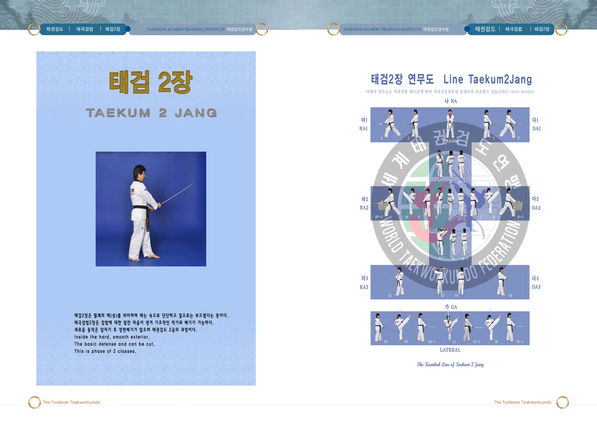
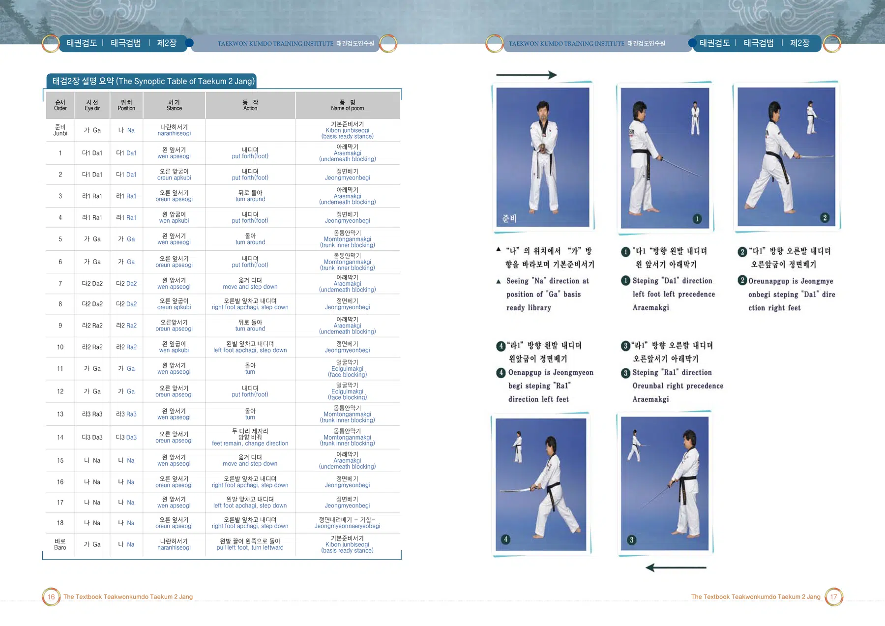
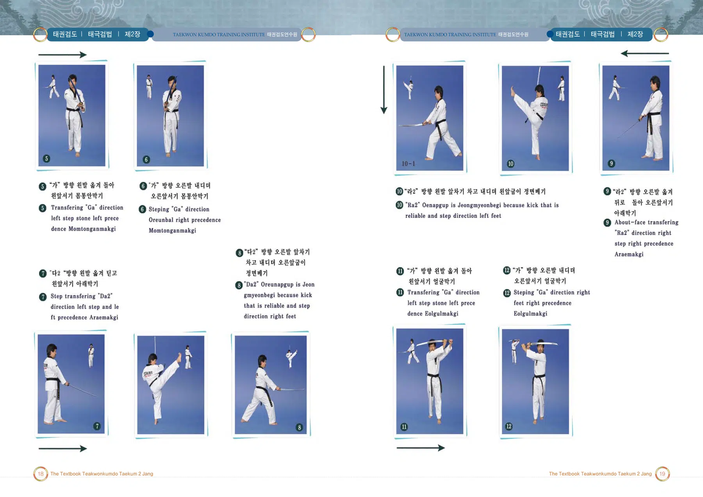
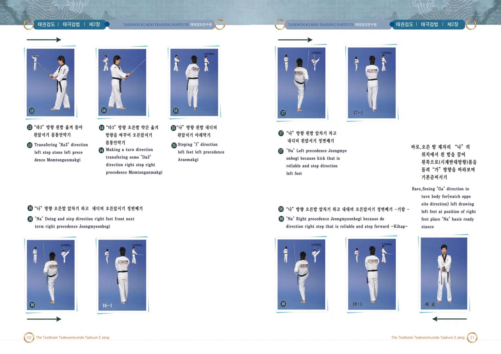

태검2장
태(兌): 안은 단단하고 밖은 부드러운 자세를 뜻하는 검법
출처: 태권검도 교본. 아래 설명은 제공된 초안의 뜻풀이 요약이며, 원문은 교본 이미지에서 확인할 수 있습니다.
태검2장의 뜻과 상징
팔괘의 태(兌)는 속은 단단하고 겉은 부드러운 성질을 뜻한다. 기초적인 막기와 베기를 익혀 가는 태권검도의 두 번째 검법이다.
태권검도 교본 인쇄 141쪽에 수록된 검법 설명을 바탕으로 요약한 해설입니다.
태검2장 교본 자료
이미지를 누르면 확대됩니다. 확대 화면에서는 좌우로 이동하여 동작과 설명을 확인하세요.



